8. L2VPN VPLS provisioning¶
Time: 60 minutes
Objective: Provision a multipoint LAN (VPLS) from CNC.
Configure VPLS with a Single-homing configuration on the CE1 side (connected only to PE1) and an All-Active Multi-homing configuration on the CE2 side (connected to both PE2 and PE3).
Then, use an ODN policy to steer VPLS traffic to the path that optimizes the Latency Metric.
In this lab, set Latency: 500 between PE1 and P4, and Latency: 500 between P5 and PE3, so that traffic between PE1 and PE2 follows the blue path, and traffic between PE1 and PE3 follows the orange path.
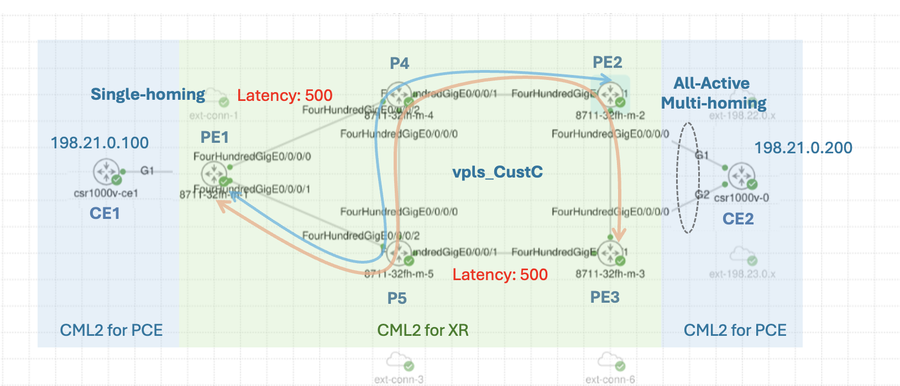
| Field | Value |
|---|---|
| Service name | CustC_vpls |
| vpn-type | multi-point (evpn) |
| Endpoints | PE1, PE2, PE3 |
| Redundancy | CE1-PE1: Single-homing, CE2-PE2&PE3: All-Active Multi-homing |
| Transport | SRv6, steering to SRv6 ODN Policy with color 30 |
8.1 CE Interface Settings¶
The CEs exist in CML for PCE (a different CML instance from the P/PE routers).
Please open CML for PCE from the Firefox Bookmark Bar.
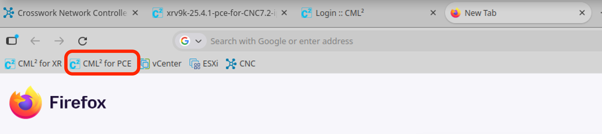
Then, select the lab xrv9k-25.4.1-pce-for-CNC7.2-ipv6.
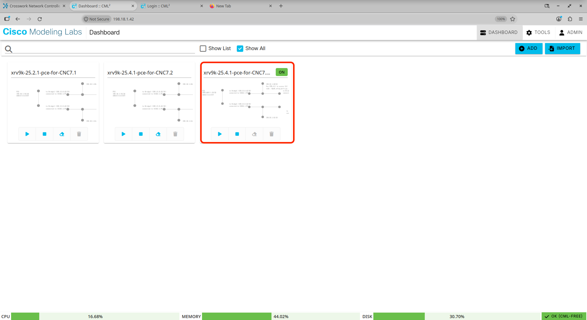
CE1 is named csr1000v-ce1, and CE2 is named csr1000v-0 in the CML.
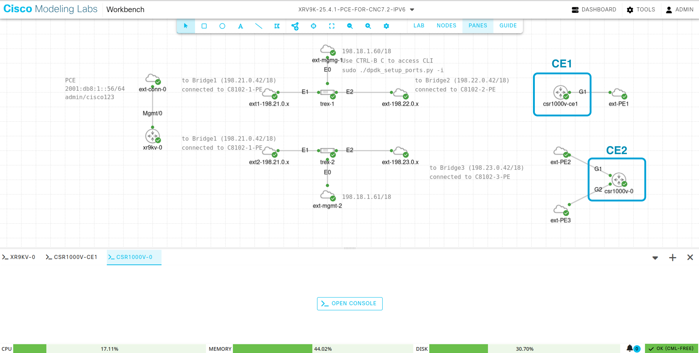
CE1 (CSR1000V-CE1)
Confirm that 198.21.0.100 is already configured on interface Gi1 facing PE1 on the CE1 side.
ce1>en
ce1#show run int GigabitEthernet 1
Building configuration...
Current configuration : 121 bytes
!
interface GigabitEthernet1
ip address 198.21.0.100 255.255.255.0
negotiation auto
no mop enabled
no mop sysid
end
ce1#
CE2 (CSR1000V-0)
Please clear the configuration of the interface Gi1 and Gi2 on the CE2 side facing PE2 and PE3, and reconfigure them as member ports of a Port-channel 1.
conf t
default interface Gi 1
default interface Gi 2
!
interface Port-Channel 1
ip address 198.21.0.200 255.255.255.0
!
interface range GigabitEthernet 1-2
channel-group 1
no negotiation auto
end
8.2 Configure Bundle-Ether on PE2/PE3¶
In this lab, there is an External Connector between the PEs and CE, and since LACP negotiation could not be performed, we will force it to UP using mode on.
PE2 and PE3
interface FourHundredGigE0/0/0/2
bundle id 1 mode on
no shut
!
interface Bundle-Ether1
lacp system mac 2323.2323.2323
!
Go to Device Management > Network Devices, then check PE2 & PE3 and select Sync-from device to NSO from the Actions.
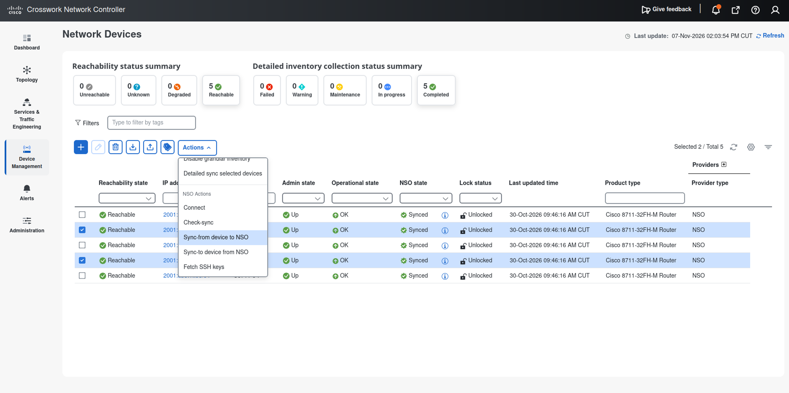
8.3 ODN Policy¶
First, set a delay metric 500 between PE1 and P4, and between P5 and PE3, so that traffic between PE1 and PE2 follows the blue path, and traffic between PE1 and PE3 follows the orange path.
8.3.1 Configure Delay Metric¶
PE1
performance-measurement
interface FourHundredGigE0/0/0/0
delay-measurement
advertise-delay 500
!
!
!
P4
performance-measurement
interface FourHundredGigE0/0/0/2
delay-measurement
advertise-delay 500
!
!
!
P5 and PE3
performance-measurement
interface FourHundredGigE0/0/0/1
delay-measurement
advertise-delay 500
!
!
!
Go to Device Management > Network Devices, then check PE1, PE3, P4, P5 and select Sync-from device to NSO from the Actions.
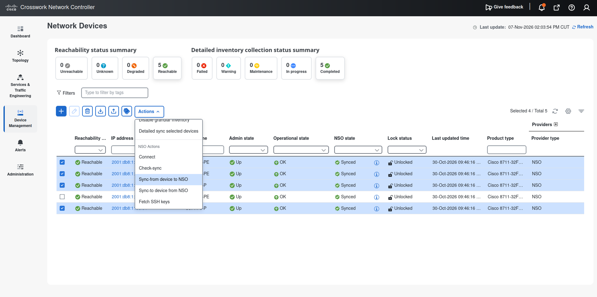
Click the link between PE1 and P4 or the link between P5 and PE3 on the topology, then confirm the delay metric is set to 500.
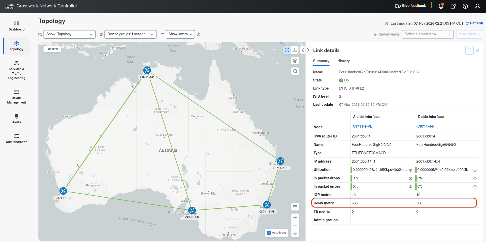
### 8.3.2 Configure ODN Policy
Unlike the policy configured in Chapter 5, an ODN policy does not require an Endpoint to be configured. When a BGP route with that Color is received, an SR policy is instantiated using the route's NextHop as the Endpoint. In other words, it has the advantage of not needing to establish a full mesh of policies between PEs.
In this lab, you will configure an ODN policy for Color 30 with latency specified as the optimization condition on all PEs.
- Go to Services & Traffic Engineering > Provisioning (NSO)
- Go to SR-TE > ODN-Template
-
Load Home > cnc-payloads > ODN_color30.json
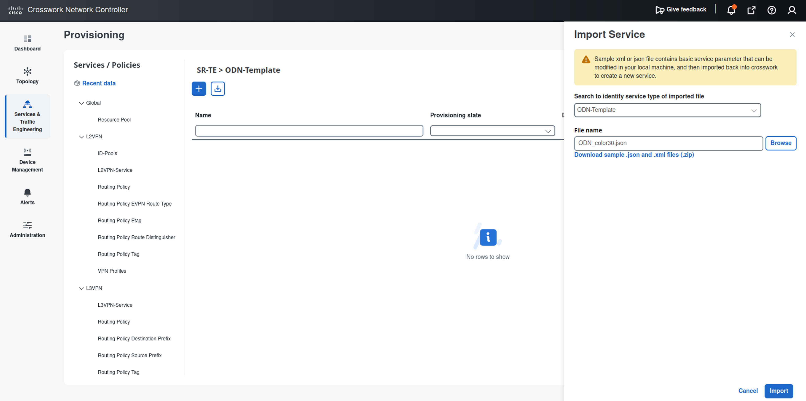
ODN_color30.json
{ "cisco-sr-te-cfp:sr-te": { "cisco-sr-te-cfp-sr-odn:odn": { "odn-template": [ { "name": "ODN_color30", "srv6": { "locator": { "locator-name": "srv6", "behavior": "ub6-insert-reduced", "binding-sid-type": "srv6-dynamic" } }, "head-end": [ { "name": "C8711-1-PE" }, { "name": "C8711-2-PE" }, { "name": "C8711-3-PE" } ], "color": 30, "dynamic": { "pce": {}, "metric-type": "latency" } } ] } } } -
Confirm the following parameters.
- Head-end: C8711-1-PE, C8711-2-PE, C8711-3-PE
- Color: 30
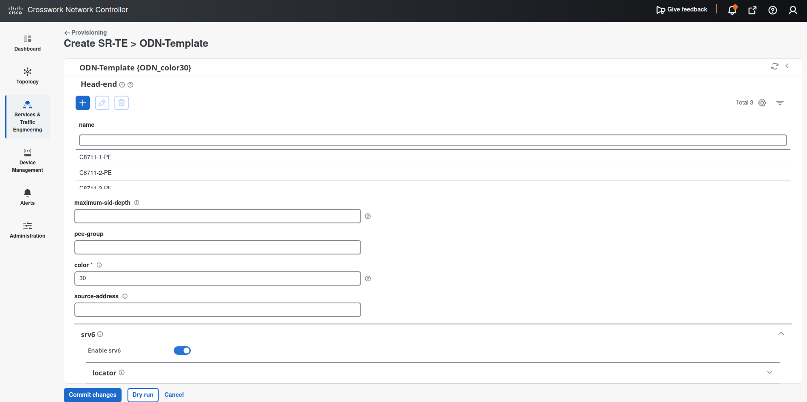
- srv6 : enable
- locator-name: srv6
- behavior: ub6-insert-reduced
- binding-sid-type: srv6-dynamic
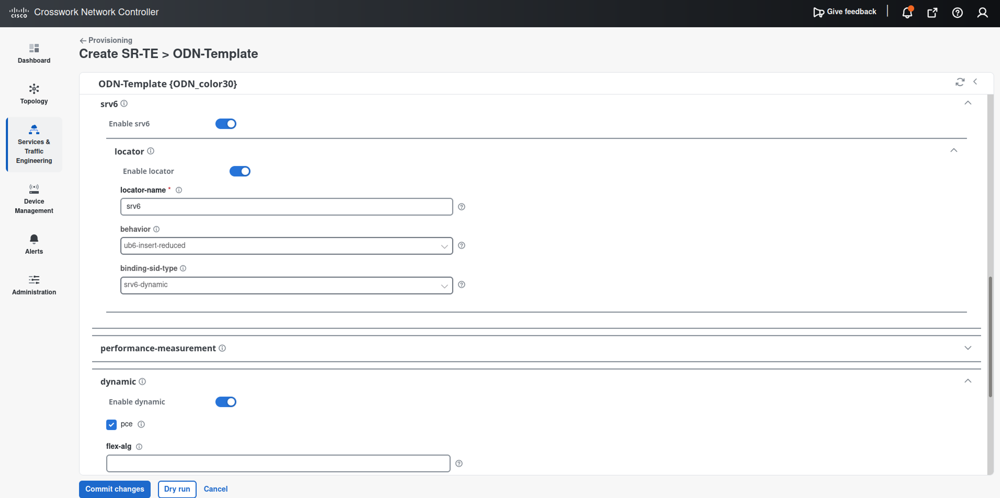
- dynamic: enable
- check pce
- metric-type: latency
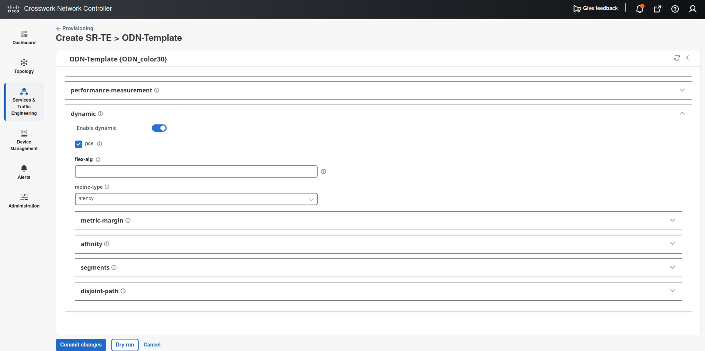
-
Dry-run & Commit changes
-
(Option) Confirm via CLI
The ODN policy is instantiated when a BGP route with Color30 is received, so while the configuration has been applied, the policy is not yet activated.
PE1
RP/0/RP0/CPU0:C8711-1-PE#show run segment-routing traffic-eng on-demand color 30 Sat Nov 7 14:48:00.616 UTC segment-routing traffic-eng on-demand color 30 srv6 locator srv6 binding-sid dynamic behavior ub6-insert-reduced ! dynamic pcep ! metric type latency ! ! ! ! ! RP/0/RP0/CPU0:C8711-1-PE# RP/0/RP0/CPU0:C8711-1-PE#show segment-routing traffic-eng policy tabular Sat Nov 7 14:48:11.945 UTC 'd': Dropping traffic Color Endpoint Admin Oper Binding State State SID ------ --------------------------------------- ------ ------ ----------------------- 10 2001:db8::2 up up fcbb:bb00:1:e002:: 20 2001:db8::3 up up fcbb:bb00:1:e003:: RP/0/RP0/CPU0:C8711-1-PE#`
8.4 Route-Policy¶
For steering VPLS traffic to the odn policy, need a route-policy to attach the extended community: color 30 to all EVPN advertisements.
8.4.1 Routing Policy Tag¶
-
Go to Services & Traffic Engineering > Provisioning (NSO), then click L2VPN > Routing Policy Tag.
-
Confirm that the routing policy tag
COLOR_30exists.- name: COLOR_30
- tag-value: 30
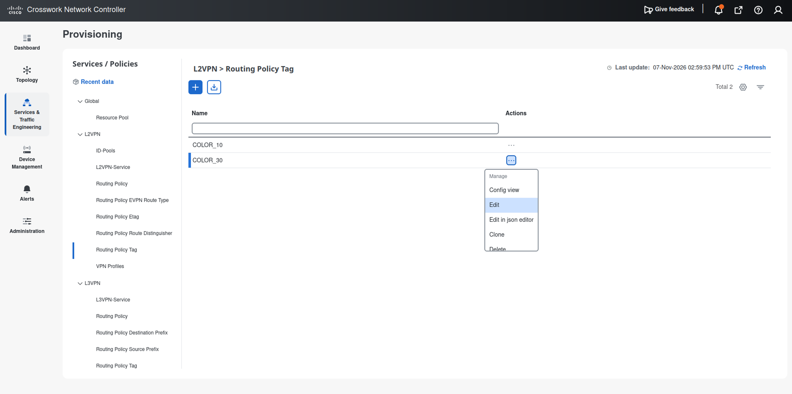
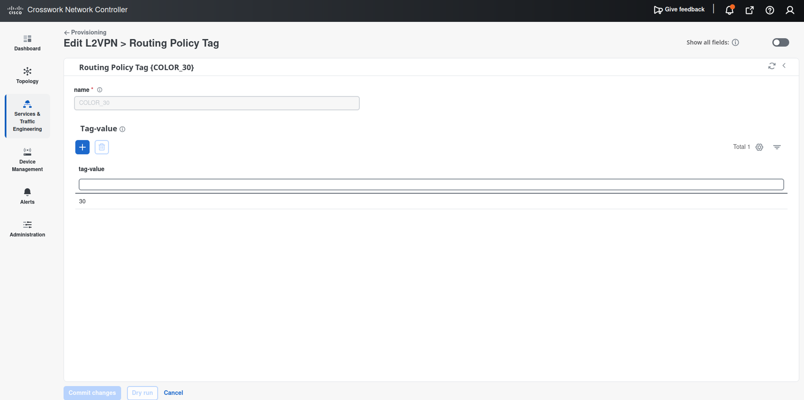
8.4.2 Routing Policy¶
-
Go to L2VPN > Routing Policy.
-
Confirm that the routing policy
POLICY1exists.- name: POLICY3
- statement name: statement1
- actions
- bgp-actions
- enable
bgp-actions - enable
set-ext-community - ext-community-set-ref: COLOR_30
- enable
- bgp-actions
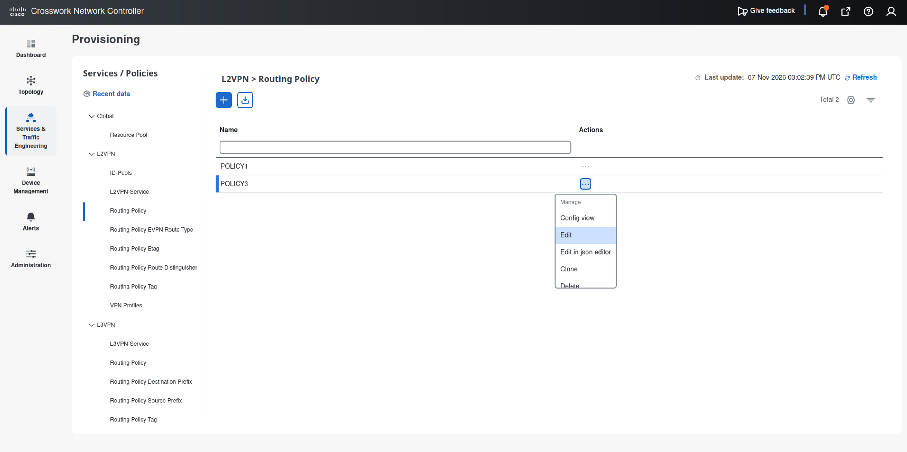
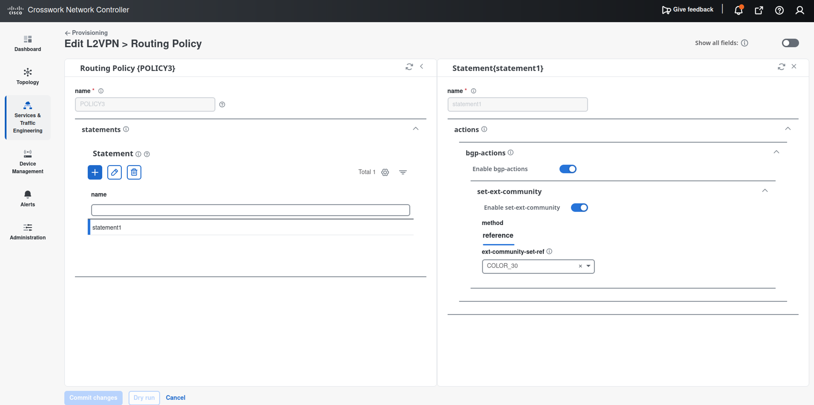
8.5 VPLS Provisioining¶
-
Go to Services & Traffic Engineering > Provisioning (NSO), then click L2VPN-Service.
-
Load Home > cnc-payloads > VPLS_CustC.json.
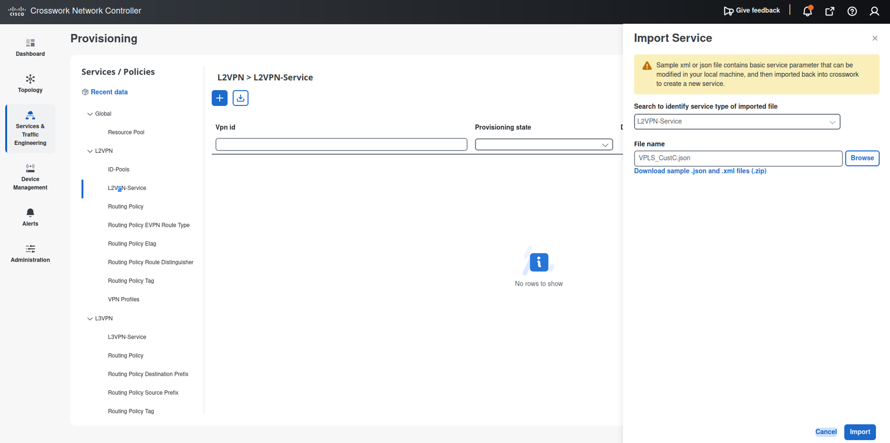
VPLS_CustC.json
{ "ietf-l2vpn-ntw:l2vpn-ntw": { "vpn-services": { "vpn-service": [ { "vpn-id": "CustC_vpls", "vpn-type": "ietf-vpn-common:mpls-evpn", "vpn-service-topology": "ietf-vpn-common:any-to-any", "vpn-nodes": { "vpn-node": [ { "vpn-node-id": "C8711-1-PE", "signaling-option": { "evpn-policies": { "mac-learning-mode": "ietf-l2vpn-ntw:control-plane" } }, "vpn-network-accesses": { "vpn-network-access": [ { "id": "0", "interface-id": "FourHundredGigE0/0/0/2", "connection": { "encapsulation": { "encap-type": "ietf-vpn-common:untagged-int" } } } ] }, "cisco-l2vpn-ntw:te-service-mapping": { "srv6": { "locator": "srv6" }, "te-mapping": { "odn": { "route-policy": [ "POLICY3" ] } } } }, { "vpn-node-id": "C8711-2-PE", "signaling-option": { "evpn-policies": { "mac-learning-mode": "ietf-l2vpn-ntw:control-plane" } }, "vpn-network-accesses": { "vpn-network-access": [ { "id": "0", "interface-id": "Bundle-Ether1", "connection": { "encapsulation": { "encap-type": "ietf-vpn-common:untagged-int" } } } ] }, "cisco-l2vpn-ntw:multi-home": { "ethernet-segment-identifier": "23.23.00.00.00.00.00.00.00" }, "cisco-l2vpn-ntw:te-service-mapping": { "srv6": { "locator": "srv6" }, "te-mapping": { "odn": { "route-policy": [ "POLICY3" ] } } } }, { "vpn-node-id": "C8711-3-PE", "signaling-option": { "evpn-policies": { "mac-learning-mode": "ietf-l2vpn-ntw:control-plane" } }, "vpn-network-accesses": { "vpn-network-access": [ { "id": "0", "interface-id": "Bundle-Ether1", "connection": { "encapsulation": { "encap-type": "ietf-vpn-common:untagged-int" } } } ] }, "cisco-l2vpn-ntw:multi-home": { "ethernet-segment-identifier": "23.23.00.00.00.00.00.00.00" }, "cisco-l2vpn-ntw:te-service-mapping": { "srv6": { "locator": "srv6" }, "te-mapping": { "odn": { "route-policy": [ "POLICY3" ] } } } } ] }, "cisco-l2vpn-ntw:auto-evi-id": [ null ], "cisco-l2vpn-ntw:bridge-group": "BRIDGE", "cisco-l2vpn-ntw:service-assurance": { "monitoring-state": "enable", "profile-name": "Gold_L2VPN_ConfigProfile system", "rule-name": "Rule-L2VPN-MP system" } } ] } } } -
Confirm that the following parameters are set.
- vpn-id:
CustC_vpls - vpn-type:
mpls-evpn - vpn-service-topology:
any-to-any - auto-evi-id: enabled
- bridge-group:
BRIDGE
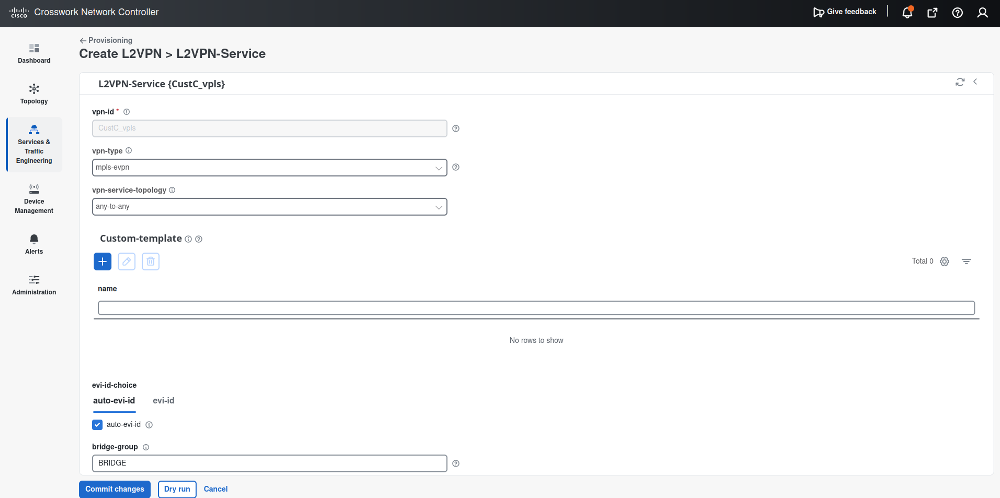
- vpn-node: C8711-1-PE
- mac-learning-mode: control-plane
- vpn-network-access: FourHundredGigE0/0/0/2
- encap-type: untagged-int
- srv6 locator:
srv6 - te-mapping: odn policy
POLICY3
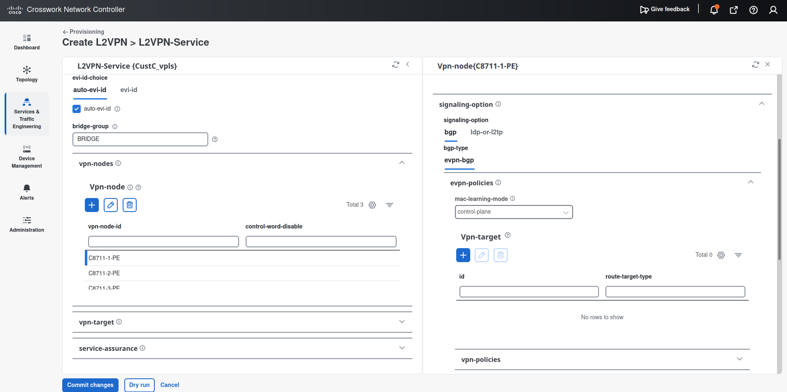
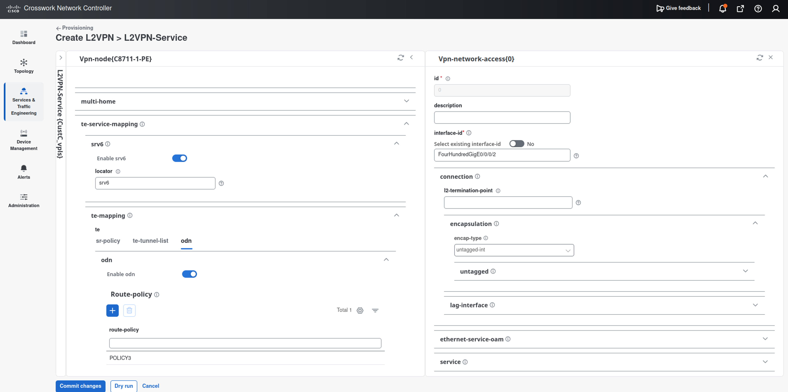
- vpn-node: C8711-2-PE
- mac-learning-mode: control-plane
- vpn-network-access: Bundle-Ether1
- encap-type: untagged-int
- multi-home:
- ethernet-segment-identifier: 23.23.00.00.00.00.00.00.00
- srv6 locator:
srv6 - te-mapping: odn policy
POLICY3
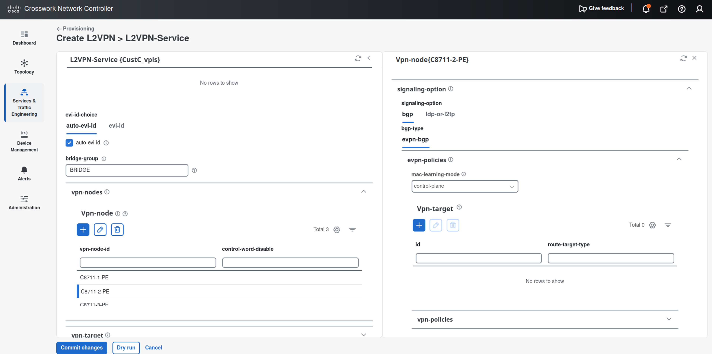
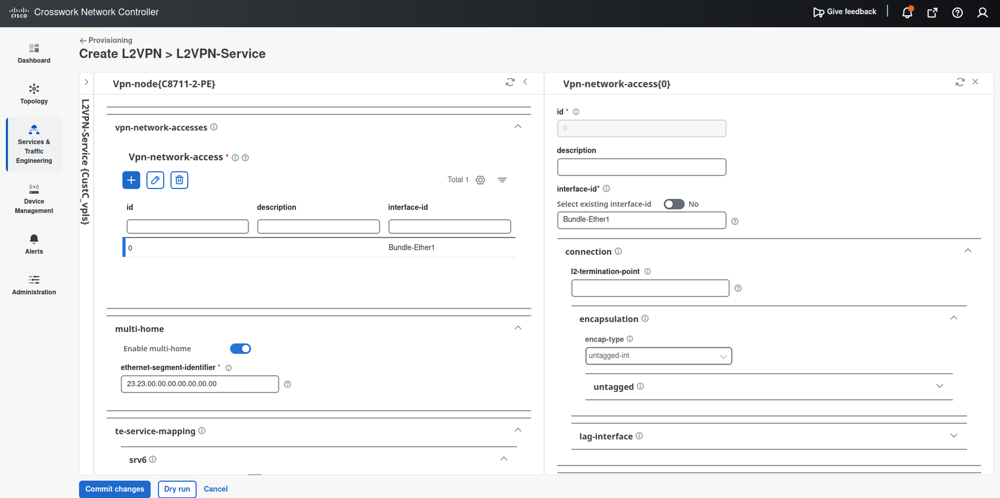
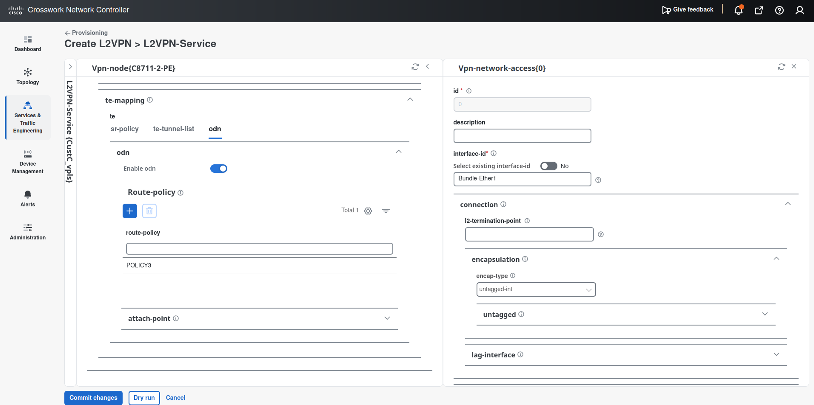
- vpn-node: C8711-2-PE
- mac-learning-mode: control-plane
- vpn-network-access: Bundle-Ether1
- encap-type: untagged-int
- multi-home:
- ethernet-segment-identifier: 23.23.00.00.00.00.00.00.00
- srv6 locator:
srv6 - te-mapping: odn policy
POLICY3
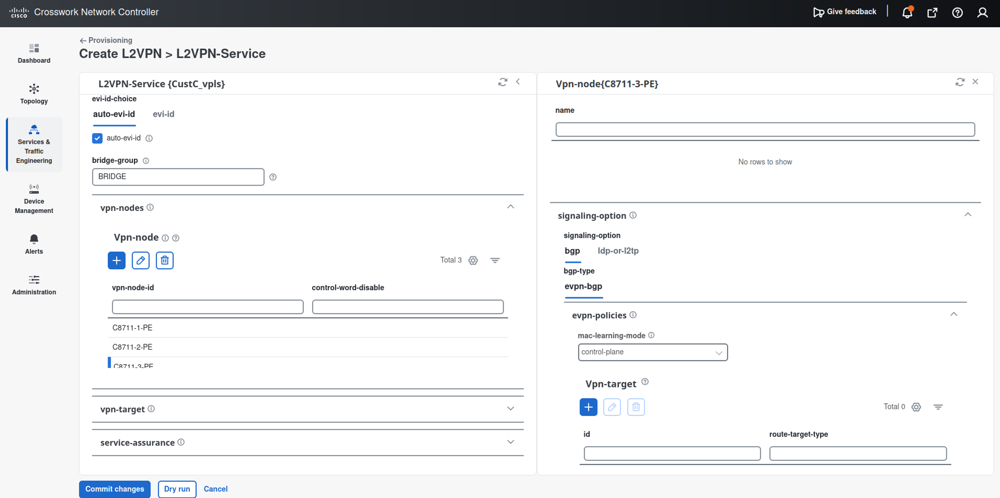
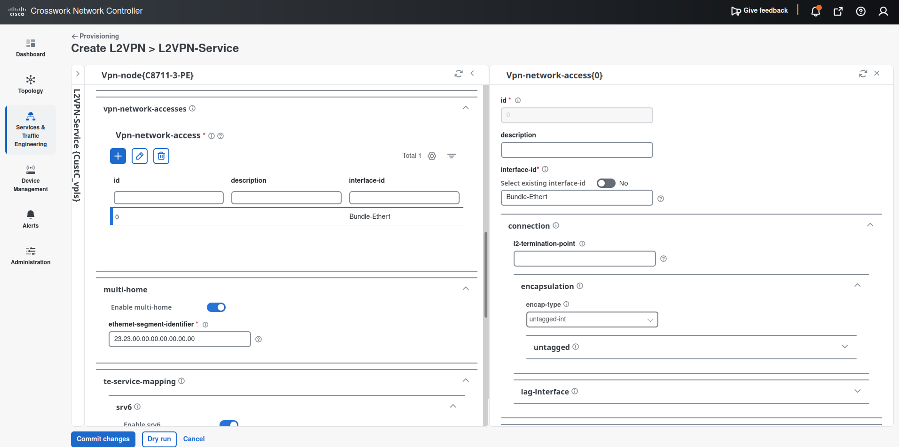
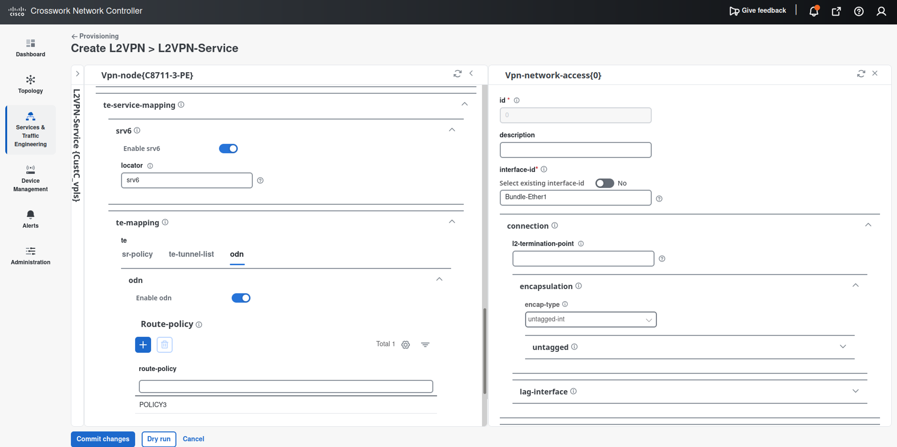
Service Assurance
- enable
service-assurance - monitoring state: enable
- preservation: remove (delete all histrical data when stop monitoring)
- profile-name:
Gold_L2VPN_ConfigProfile system - rule-name:
Rule-L2VPN-MP system
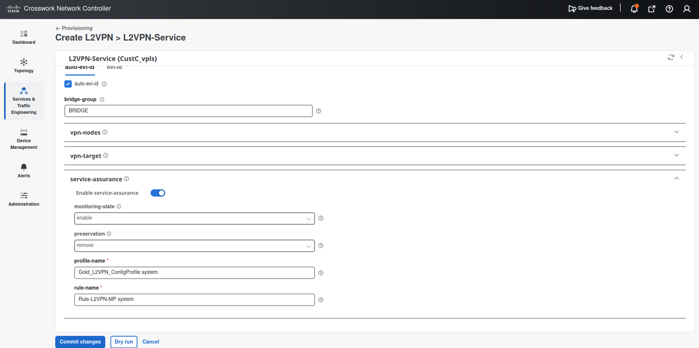
- vpn-id:
-
Dry-run and Commit changes
8.6 Confirmation of VPLS¶
via CNC GUI¶
- Open Services & Traffic Engineering > VPN Services.
-
Select
CustC_vpls.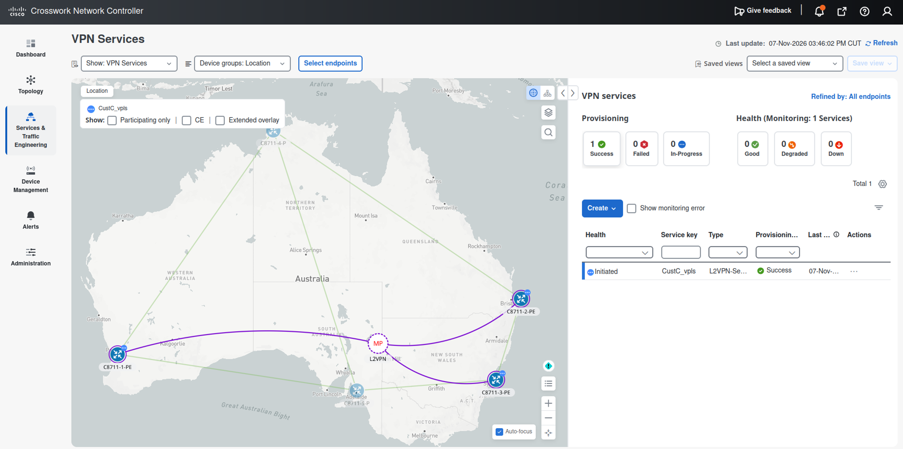
via CLI¶
On the PE1/PE2/PE3:
The uDT2U/uDT2M SIDs are assigned to CustC_vpls.
RP/0/RP0/CPU0:C8711-1-PE#show segment-routing srv6 locator srv6 sid
Sat Nov 7 15:47:22.551 UTC
SID Behavior Identification Owner State RW
-------------------------- ---------------- -------------------------------- ------------------ ----- --
fcbb:bb00:1:: uN (PSP/USD) 'default':1 sidmgr InUse Y
fcbb:bb00:1:e000:: uA (PSP/USD) [FH0/0/0/0, Link-Local]:0 isis-1 InUse Y
fcbb:bb00:1:e001:: uA (PSP/USD) [FH0/0/0/1, Link-Local]:0 isis-1 InUse Y
fcbb:bb00:1:e002:: uB6 (PSP/USD Insert.Red) 'srte_c_10_ep_2001:db8::2' (10, 2001:db8::2) xtc_srv6 InUse Y
fcbb:bb00:1:e003:: uB6 (PSP/USD Insert.Red) 'srte_c_20_ep_2001:db8::3' (20, 2001:db8::3) xtc_srv6 InUse Y
fcbb:bb00:1:e004:: uDT2U 100:0 l2vpn_srv6 InUse Y
fcbb:bb00:1:e005:: uDT2M 100:0 l2vpn_srv6 InUse Y
RP/0/RP0/CPU0:C8711-1-PE#
Confirm a mac-learning between PEs.
RP/0/RP0/CPU0:C8711-1-PE#show evpn evi vpn-id 100 mac
Sat Nov 7 15:51:19.199 UTC
VPN-ID Encap MAC address IP address Nexthop Label SID
---------- ---------- -------------- ---------------------------------------- --------------------------------------- -------- ---------------------------------------
100 SRv6 3e0c.fefb.7071 :: FourHundredGigE0/0/0/2 0 fcbb:bb00:1:e004::
100 SRv6 62ab.683d.a500 :: 2001:db8::2 IMP-NULL fcbb:bb00:2:e002::
100 SRv6 62ab.683d.a500 :: 2001:db8::3 IMP-NULL fcbb:bb00:3:e002::
100 SRv6 e613.d71f.529b :: FourHundredGigE0/0/0/2 0 fcbb:bb00:1:e004::
RP/0/RP0/CPU0:C8711-1-PE#
You can confirm that PE2 and PE3 are operating in All-Active Multi-homing with the following command.
On PE2/PE3:
RP/0/RP0/CPU0:C8711-2-PE#show evpn ethernet-segment esi 0023.2300.0000.0000.0000 detail
Sat Nov 7 16:11:46.047 UTC
Ethernet Segment Id Interface Originating IP
------------------------ ---------------------------------- --------------------
0023.2300.0000.0000.0000 BE1 2.2.2.2
3.3.3.3
ES to BGP Gates : Ready
ES to L2FIB Gates : Ready
Main port :
Interface name : Bundle-Ether1
Interface MAC : 0006.04b9.a505
IfHandle : 0x7800002c
State : Up
Redundancy : Not Defined
ESI ID : 1
ESI type : 0
Value : 0023.2300.0000.0000.0000
ES Import RT : 2323.0000.0000 (from ESI)
Topology :
Operational : MH, All-active
Configured : All-active (AApF) (default)
Service Carving : Auto-selection
Multicast : Disabled
Convergence :
Peering Details : 2 Nexthops
2.2.2.2 [MOD:P:00:T]
3.3.3.3 [MOD:P:00:T]
Service Carving Synchronization:
Mode : NTP_SCT
Peer Updates :
2.2.2.2 [SCT: 2026-11-07 15:45:44.1794066]
3.3.3.3 [SCT: 2026-11-07 15:45:47.1794066]
Service Carving Results:
Forwarders : 1
Elected : 1
Not Elected : 0
EVPN-VPWS Service Carving Results:
Primary : 0
Backup : 0
Non-DF : 0
MAC Flush msg : STP-TCN
Peering timer : 3 sec [not running]
Recovery timer : 30 sec [not running]
Carving timer : 0 sec [not running]
Revert timer : 0 sec [not running]
HRW Reset timer : 5 sec [not running]
Local SHG filters :
(mpls) None
(srv6) 1:16
Remote SHG filters: 1
(srv6) 1:16 : nexthop 2001:db8::3
Access signal mode: Bundle OOS
RP/0/RP0/CPU0:C8711-2-PE#
8.7 Connectivity Check¶
Due to lab constraints, CE2 cannot receive ARP replies, so we will configure static MAC learning.
On CE1(csr1000v-ce1):
ce1#show arp
Protocol Address Age (min) Hardware Addr Type Interface
Internet 198.21.0.100 - 5254.004d.9a65 ARPA GigabitEthernet1
Internet 198.21.0.200 5 001e.e699.5dc0 ARPA GigabitEthernet1
ce1#
On CE2(csr1000v-0):
ce2#show arp
Protocol Address Age (min) Hardware Addr Type Interface
Internet 198.21.0.100 0 Incomplete ARPA
Internet 198.21.0.200 - 001e.e699.5dc0 ARPA Port-channel1
ce2#
ce2#conf t
ce2(config)#arp 198.21.0.100 5254.004d.9a65 arpa
ce2(config)#end
ce2#show arp
Protocol Address Age (min) Hardware Addr Type Interface
Internet 198.21.0.100 - 5254.004d.9a65 ARPA
Internet 198.21.0.200 - 001e.e699.5dc0 ARPA Port-channel1
ce2#
Perform the ping between CEs.
Note
This lab is unstable because it uses External Connectors for PE-CE connectivity. Pings may sometimes fail.
ce2#ping 198.21.0.100
Type escape sequence to abort.
Sending 5, 100-byte ICMP Echos to 198.21.0.100, timeout is 2 seconds:
!!!!!
Success rate is 100 percent (5/5), round-trip min/avg/max = 4/6/13 ms
ce2#
8.8 Automated Steering¶
8.8.1 Enable Route-Policy¶
In the built-in L2VPN service model, MP-BGP-related settings are not performed as described above. Therefore, please configure the following on PE1 and PE2 to enable the route-policy.
On the PE1/PE2/PE3:
conf t
router bgp 65000
neighbor-group ibgp
address-family l2vpn evpn
route-policy POLICY3 out
!
!
end
Go to Device Management > Network Devices, then check PE1 & PE2 & PE3 and select Sync-from device to NSO from the Actions.
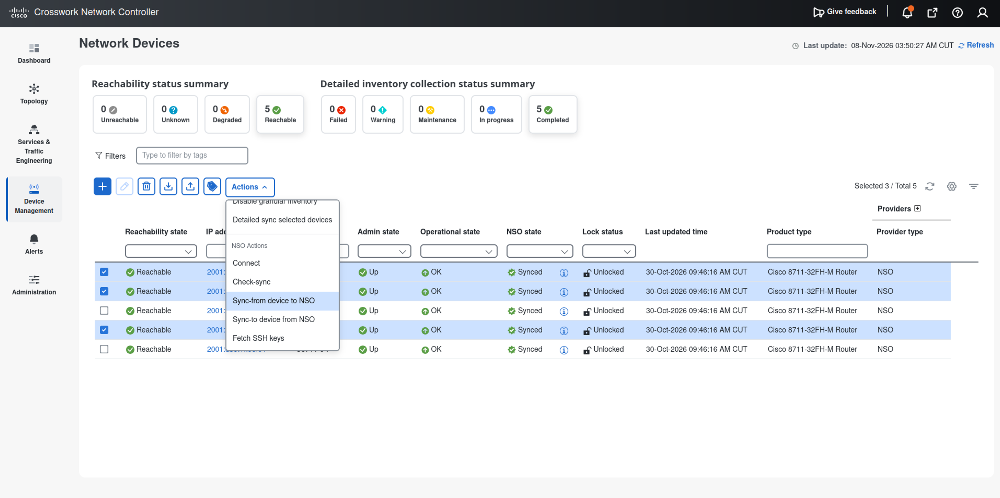
8.8.2 Confirmation via CLI¶
When checking the EVPN route information exchanged with the peer PE via BGP, you can find that Color 30 is assigned to them.
On the PE1/PE2/PE3:
RP/0/RP0/CPU0:C8711-1-PE#show bgp l2vpn evpn
Sun Nov 8 03:53:50.603 UTC
BGP router identifier 1.1.1.1, local AS number 65000
BGP generic scan interval 60 secs
Non-stop routing is enabled
BGP table state: Active
Table ID: 0x0
BGP main routing table version 447
BGP NSR Initial initsync version 1 (Reached)
BGP NSR/ISSU Sync-Group versions 0/0
BGP scan interval 60 secs
Status codes: s suppressed, d damped, h history, * valid, > best
i - internal, r RIB-failure, S stale, N Nexthop-discard
Origin codes: i - IGP, e - EGP, ? - incomplete
Network Next Hop Metric LocPrf Weight Path
Route Distinguisher: 1.1.1.1:100 (default for vrf BRIDGE_evi_100)
Route Distinguisher Version: 435
*>i[1][0023.2300.0000.0000.0000][0]/120
2001:db8::2 C:30
100 0 i
* i 2001:db8::3 C:30
100 0 i
*>i[1][0023.2300.0000.0000.0000][4294967295]/120
2001:db8::2 C:30
100 0 i
* i 2001:db8::3 C:30
100 0 i
*>i[2][0][48][001e.e699.5dc0][0]/104
2001:db8::2 C:30
100 0 i
* i 2001:db8::3 C:30
100 0 i
<--- omitted --->
Confirm that the Color30 ODN policy is instantiated in a full mesh.
On the PE1/PE2/PE3:
RP/0/RP0/CPU0:C8711-1-PE#show segment-routing traffic-eng policy tabular
Sun Nov 8 04:37:30.525 UTC
'd': Dropping traffic
Color Endpoint Admin Oper Binding
State State SID
------ --------------------------------------- ------ ------ -----------------------
10 2001:db8::2 up up fcbb:bb00:1:e002::
20 2001:db8::3 up up fcbb:bb00:1:e003::
30 2001:db8::2 up up fcbb:bb00:1:e006::
30 2001:db8::3 up up fcbb:bb00:1:e007::
RP/0/RP0/CPU0:C8711-1-PE#
8.8.3 Confirmation via GUI¶
- Open Services & Traffic Engineering > VPN Services.
-
Select
CustC_vpls. -
Click Actions > View details
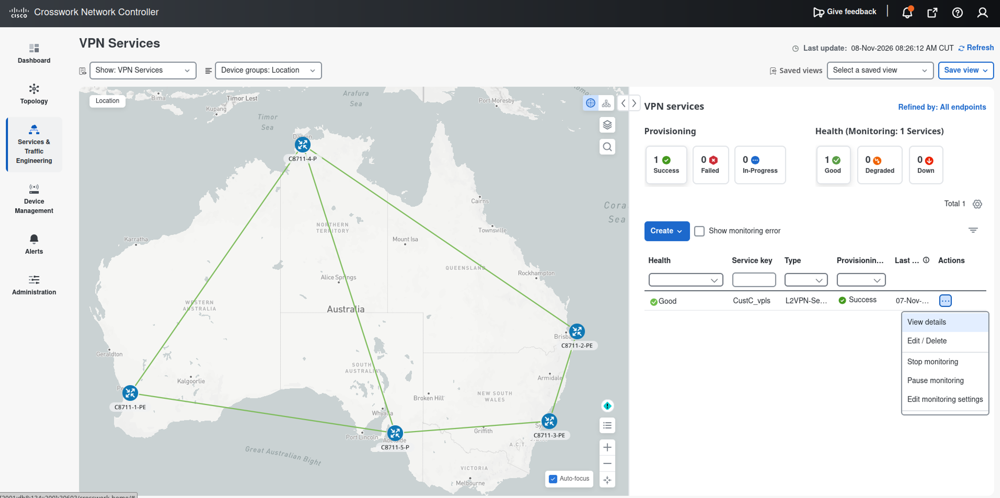
-
Go to Transport > SRv6, then confirm SRv6 Policies
Color30are steering the VPLS traffic. It can be seen that traffic is forwarded along a path that avoids the PE1-P4 and P5-PE3 paths where the Delay Metric is configured. It takes time for all policies to be displayed.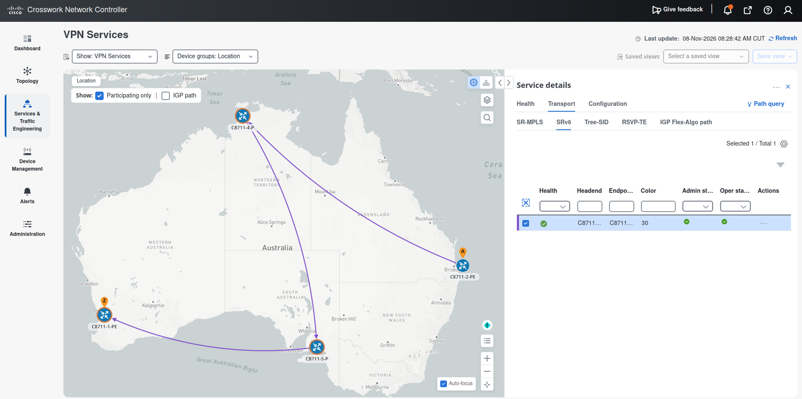
8.9 Packet Capture (Option)¶
We will use the packet capture feature of CML to observe the encapsulation in an IPv6 header.
-
Start ping from
CE1toCE2. Due to lab circumstances, Ping may not go through, but that is not a problem.On CE1(csr1000v-CE1):
ce1#ping 198.21.0.200 repeat 100 -
Right click the link between
P4andP5and start a packet capture. -
Click the ICMP echo request from 198.21.0.100 to 198.21.0.200.
-
Find the IPv6 header. The destination address contains the P4 uN and PE2 uN (fcbb:bb00:4:2::), and the SR header contains the PE3 uDT2U (ex. fcbb:bb00:3:e002::).
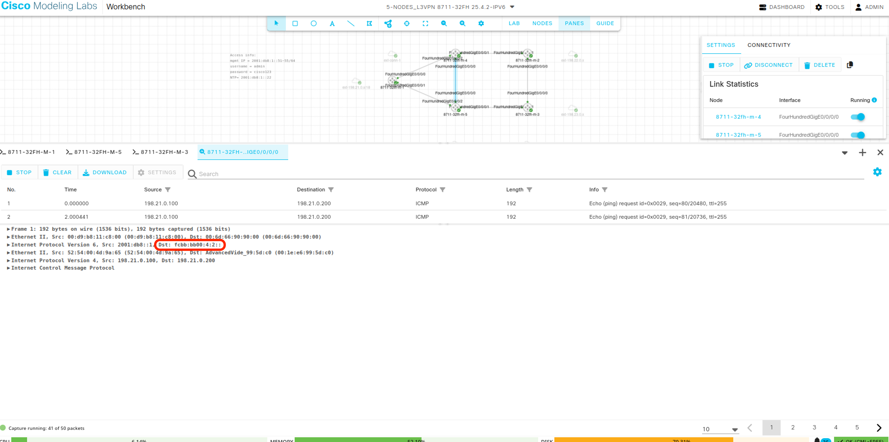
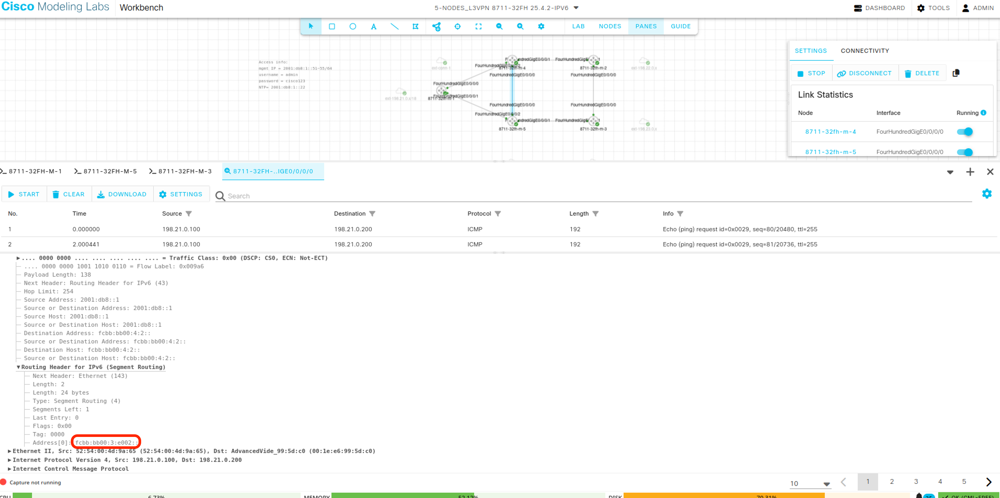
With the ub6-insert-reduced (Binding-SID insert reduced behavior), an SRH (Segment Routing Header) is inserted directly between the existing IPv6 header and the payload, instead of attaching a new IPv6 header to the outside.
Therefore, an SR header containing the uDT2U SID is inserted into the IPv6 header in this way, and the Outer IPv6 Address contains the P4 and PE2 uN SID from the SR policy used for steering.
-
Right click the link between
P4andPE2and start a packet capture. -
Click the ICMP echo request from 198.21.0.100 to 198.21.0.200.
-
Find the IPv6 header. It can be seen that Shift & Forward is performed at P4, and PE2's uN is at the beginning. The SR header still contains the PE3 uDT2U (ex. fcbb:bb00:3:e002::).
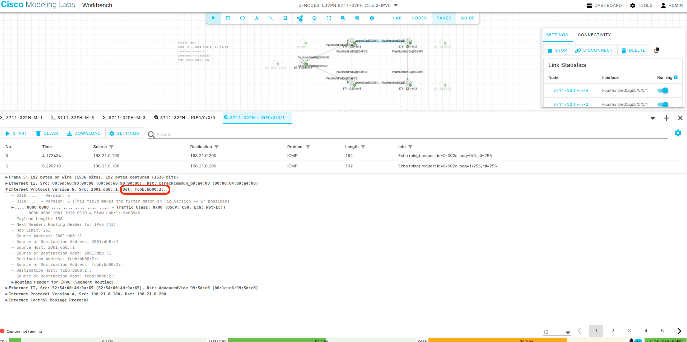
-
Right click the link between
PE2andPE3and start a packet capture. -
Click the ICMP echo request from 198.21.0.100 to 198.21.0.200.
-
It can be seen that the last uSID (uN) in the Destination Address was processed at PE2, the PE3 uDT2U in the SR header was copied to the Destination Address, and the SR header was removed.
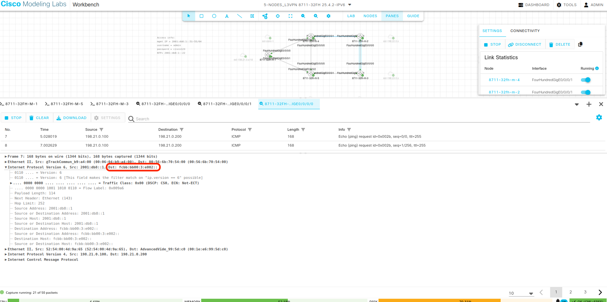
8.10 Service Health¶
- Open Services & Traffic Engineering > VPN Services.
- You can confirm the helth of
CustC_vplsis degraded. -
Click Actions > Assurance graph
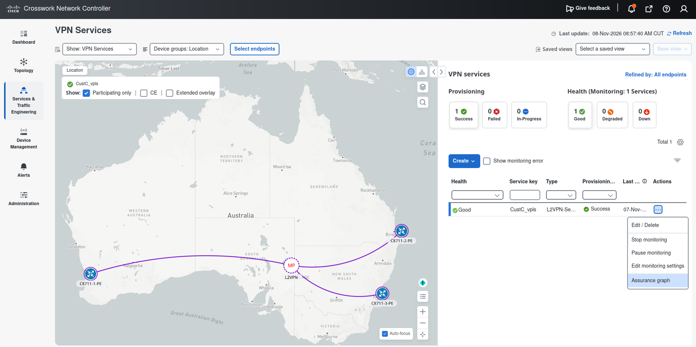
-
Drill down into this graph and check the all sub services are
Good.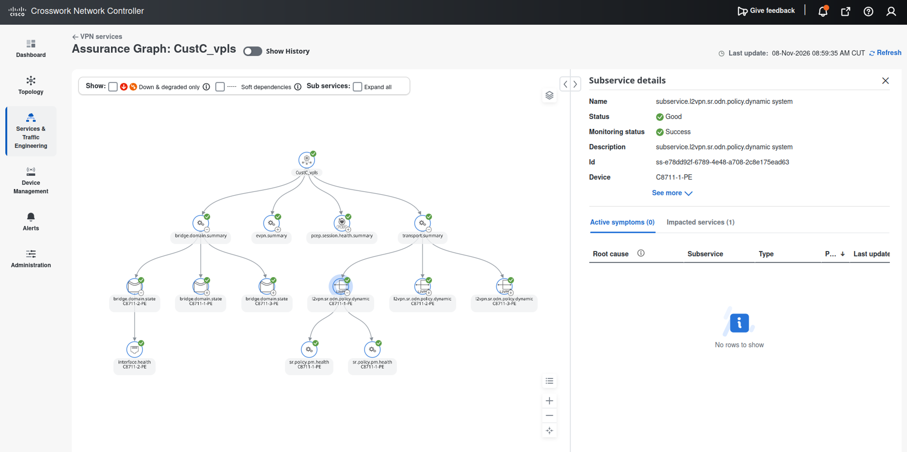
-
Turn on
Show Historyand select the time when Service Health was degraded. By doing so, you can check what symptoms were occurring at that time.In this case, even though Steering to the ODN policy was configured, these symptoms occurred because the ODN policy had not been instantiated at the initial point.
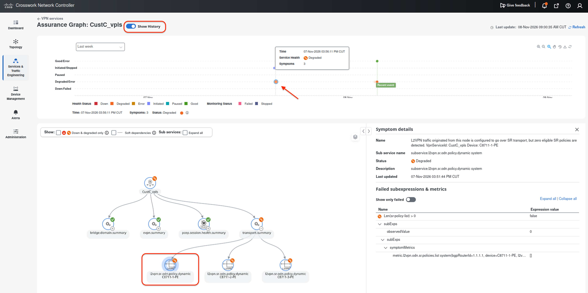
8.11 Done when¶
-
CustC_vplsis up and shown as muplti-point in VPN Services. - The SR policy is steering the VPLS traffic.
8.12 Clean-up rule¶
First, delete the configuration set via the CLI, and then delete the VPWS service on the CNC side.
-
Delete the following configuration on the PE1/PE2/PE3.
conf t router bgp 65000 neighbor-group ibgp address-family l2vpn evpn no route-policy POLICY3 out ! ! commit -
Go to Device Management > Network Devices, then check PE1 & PE2 and select
Sync-from device to NSOfrom the Actions. -
Go to Services & Traffic Engineering > Provisioning (NSO), then click L2VPN-Service.
-
Select Delete dry run from the Actions.
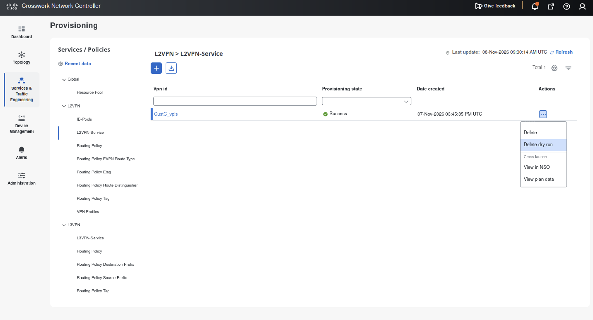
-
Check the config diff and click
Delete.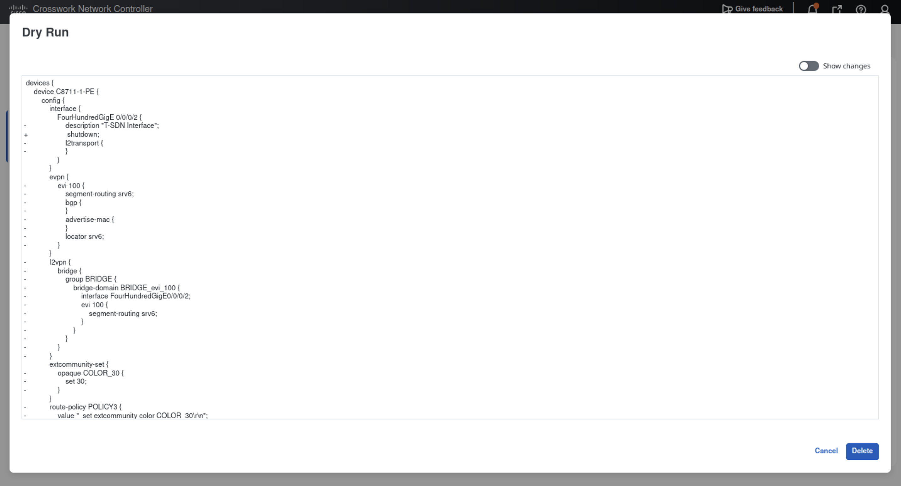